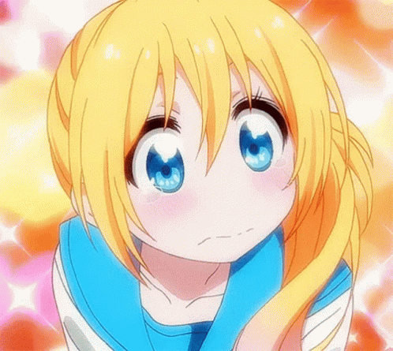

Bokutachi Wa Benkyou Ga Dekinai
A história gira em torno de Yuiga, um esforçado estudante do terceiro ano colegial, que ganha a missão de ensinar duas colegas de classe que são geniais em algumas áreas mas verdadeiros desastres em outras. Ele precisa vencer esse desafio para ganhar uma importante indicação de bolsa para universidade.

Mangaka-san To Assistant-san To the animation
A história gira em torno do mangaka Aito Yuuki e sua assistente Ashisu Sahoto. Aito não consegue entender os sentimentos dos personagens em suas histórias. Então, ele pede para Ashisu ajudá-lo. Ashisu faria tudo pelo trabalho. Ela até o deixaria tocar em seus seios para que ele soubesse como é a sensação? Podemos entendê-los? Essa é a comédia sobre a vida de um mangaká.

Mayo Chiki
Conta a história do protagonista Sakamachi Kinjirou, um estudante que tem medo de mulher devido a um trauma sofrido na infância com sua mãe e irmã. Um dia, Kinjirou descobre que o mordomo de sua amiga Suzutsuki Kanade, Konoe Subaru, é na verdade uma garota de 17 anos.

Monster Musume No Iru Nichijou
Durante anos o governo japonês manteve um segredo: que criaturas místicas como centauros, harpias e lâmias são reais. Três anos antes de começar esta história, as autoridades governamentais revelaram a existência dessas criaturas e aprovaram um projeto conhecido como "Intercâmbio Cultural de Interespécies".

Nisekoi
Conta a história do estudante do ensino médio, Raku Ichijou, filho de um líder da facção yakuza Shuei-Gumi, e Chitoge Kirisaki, a filha de um chefe de uma gangue rival conhecida como Colmeia. Eles inesperadamente se encontram quando Chitoge pula de um muro e dá uma joelhada no rosto de Raku.
Ore Ga Ojousama Gakkou Ni. Aventura
A história se passa em uma escola escondida, cercada por montanhas, jovens senhoritas de famílias ricas aprendem tudo o que uma mulher de classe alta precisa saber. Elas também são completamente isoladas do mundo exterior, mantendo-se protegidas e inocentes. No entanto, um problema surgiu recentemente: mais e mais garotas não estão conseguindo lidar com o mundo moderno após a graduação. Para resolver isso, foi decido colocar um garoto "plebeu" na escola.

Ore Wo Suki Nano Wa Omae Dake Ka Yo
Nessa história de comédia romântica, Amatsuyu Kirasagi é convidado a sair pela bela 'upperclassman', Cosmos, e a sua amiga de infância, Himawari. Esperando ouvir as suas confissões, ele triunfantemente vai para o encontro com cada uma delas, por turnos.

Renai Boukun
A história é sobre o Kiss Note, um caderno poderoso que faz com que qualquer um que tenha o nome escrito juntos se apaixonar instantaneamente se eles se beijarem, independentemente de qualquer circunstância. Este item mágico pertence a um anjo chamado Guri, cujo o trabalho é criar casais.

Rosario To Vampire
Conta a história de Tsukune Aono, um garoto de 15 anos que vai estudar na Academia Yoka, uma escola exclusiva para monstros, vampiros e toda sorte de criaturas sobrenaturais.

Kami Nomi Zo Shiru Sekai
Conta a história do nosso protagonista Keima, apelidado de o “Deus Conquistador”, ele é um estudante que chegou a conquistar o coração de mais de 10000 heroínas em jogos de namoro.